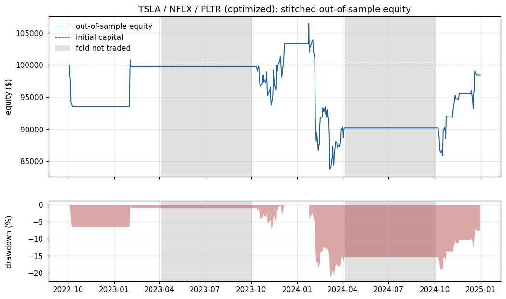
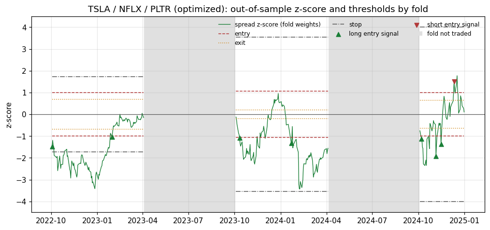
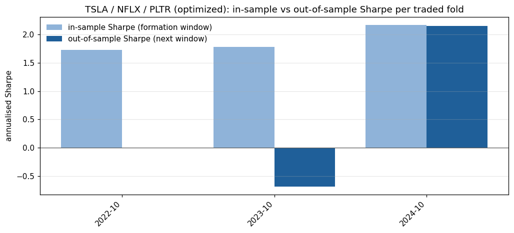

Generated 2026-09-11T23:39:30+00:00 UTC from commit 65cd52cb9b (uncommitted changes). Protocol SHA-256 23f85374f30bb0c8.
Out-of-sample Sharpe 0.02 (95% block-bootstrap interval -0.94 to 1.55), probabilistic Sharpe ratio 0.512. The result is not statistically distinguishable from zero skill at the 95% level. Only 8 closed round trips, so per-trade statistics are imprecise.
Headline statistics (out-of-sample only)
Out-of-sample period
2022-10-03 to 2024-12-31 (564 days)
Total return
-1.54%
CAGR
-0.69%
Annualised volatility
13.88%
Sharpe (95% bootstrap interval)
0.02 (-0.94 to 1.55)
Probabilistic Sharpe ratio
0.512
Sortino
0.03
Max drawdown (longest spell, days)
-21.38% (236)
Calmar
-0.03
Skewness / kurtosis of daily returns
-1.90 / 33.30
Folds traded
3 of 5
Skipped: not cointegrated / half-life / no in-sample edge
2 / 0 / 0
Closed round trips
8
Win rate (per round trip)
75.0%
Profit factor
0.92
Average trade return on equity
-0.008%
Average holding period
15.1 days
Stop-loss exits
1
Time in market
21.4%
Annual turnover (x equity)
7.3
Trading costs / borrow costs ($)
782.05 / 89.61
Charts

Stitched out-of-sample equity and drawdown. Grey spans are folds that were not traded.

Out-of-sample z-score with each fold's thresholds and entry signals.

In-sample (formation) vs out-of-sample Sharpe for each traded fold.
Folds
Fold
Trading window
Trace stat / 5% crit
Half-life (days)
Status
Entry / exit / stop / lookback
In-sample Sharpe
In-sample deflated Sharpe
OOS return
OOS Sharpe
OOS trades
0
2022-10-03 to 2023-04-03
31.81 / 29.80
28.8
traded
1.00 / 0.69 / 1.74 / 160
1.73
0.791
-0.23%
-0.00
2
1
2023-04-04 to 2023-10-03
22.34 / 29.80
59.3
not cointegrated (trace 22.34 <= critical 29.80)
n/a
n/a
0.00%
n/a
0
2
2023-10-04 to 2024-04-04
32.35 / 29.80
29.7
traded
1.06 / 0.20 / 3.55 / 170
1.78
0.675
-9.57%
-0.68
2
3
2024-04-05 to 2024-10-03
25.87 / 29.80
18.5
not cointegrated (trace 25.87 <= critical 29.80)
n/a
n/a
0.00%
n/a
0
4
2024-10-04 to 2024-12-31
32.56 / 29.80
10.1
traded
1.00 / 0.65 / 4.00 / 126
2.16
0.968
9.12%
2.15
4
Transaction-cost sensitivity
Fold decisions (weights, parameters, signals) are frozen; only the per-side cost changes.
Baskets were chosen by the researcher from companies that exist today, so selection and survivorship bias are not controlled.
Prices are Yahoo Finance adjusted closes. Dividend adjustment rewrites history and Yahoo revises it over time; results are pinned to the SHA-256 of the price snapshot used.
Fills happen at the next daily close with a flat cost per side. There are no bid-ask dynamics, market impact, short-sale restrictions or borrow recalls.
Fractional shares, no margin interest, no rebate on short proceeds, and uninvested cash earns nothing.
Weights are frozen within each trading window, so the dollar hedge drifts as prices move.
With few round trips the point Sharpe ratio is noisy; the bootstrap interval and PSR are the relevant evidence, and neither accounts for how many baskets or protocols a researcher tried.